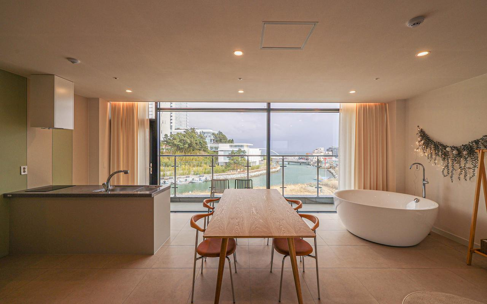

공간·분위기 우선 후보01 · GYEONGPO / GANGMUN
경포대 상상초당 펜션
예약 사이트명: 강릉 상상초당 펜션
함께 머무는 공간과 전망이 중요하다면.
201호 · 날짜 미표시 참고 객실료158,800원여기어때 공개 예시 · 기준 2인 / 10.31 요금 아님
- 5인 객실
- 201·401호 / 기준 2, 최대 8인
- 추가비
- 성인 3명 × 30,000원 = 90,000원
- 바비큐
- 5인 약 35,000원 · 5인 적용금액 재확인
- 위치
- 강릉시 해안로 378
★ 4.7 / 5 · NOL 50개
청결·넓은 공간·해변 접근성에 긍정적인 후기가 있습니다. 2026.05.18 후기에는 빔프로젝터가 꺼지는 문제가 언급됐습니다.
확인할 점 · 5인 침구 구성, 발코니 바비큐의 우천·강풍 운영 여부. 남성 5인 예약 가능 여부도 문의하세요.
사진: NOL 숙소 등록 사진 · 참고 요금 출처